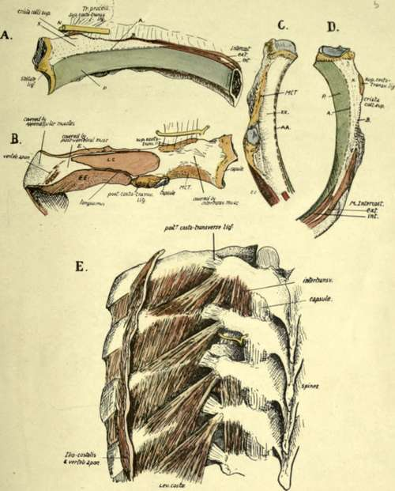

Costal Cartilages. Part 4
Description
This section is from the book "The Anatomy Of The Human Skeleton", by J. Ernest Frazer. Also available from Amazon: The anatomy of the human skeleton.
Costal Cartilages. Part 4
E and LC are continuous, owing to continuity of the muscular fibres, and some of the ridges of the levator area can be traced occasionally into EE just in front of the tubercle. This last indicates that the fibres of the Levator may occasionally be continued across the bone into the next External Intercostal.
These possibilities of continuity between the Levator costae and the External Intercostals can be understood by reference to the drawing of the dissected part in the lowest spaces in this there is marked prolongation of fibres from the Levator to the next Intercostal, and these fibres, found in the lower spaces, are distinguished as forming " Levatores longiores".
Fig 42.-The proximal end of a middle left rib. a from the front, B from behind, c from below, and D from above. In A the line A marks the attachment of a fascia continuous with the inner intercostal muscle and therefore the "posterior intercostal fascia " : it separates the pleural surface (p) from the area x which supports fatty tissue. Above this the nerve (AT) runs through the tissue in front of the ligament. The External Intercostal is prolonged back as an aponeurotic sheet along B to the Hgament. In Fig. B observe the different direction of the fibres of the upper hgament seen from behind : LCt Levator costa?, E and EE are External Intercostals of upper and lower spaces respectively, MCT is middle costo-transverse ligament. Iliocostalis and accessorius are attached just internal to the vertebral aponeurosis, and Longissimus between LC and EE. In C and D the references are as in the other figures. A"A* and A A in C are areas corresponding with X and A on the upper aspect of the rib below. E is from a dissection showing the structures in relation with the dorsal parts of the ribs. In one space the inter-transverse muscles have been removed, and the posterior division of the nerve is seen dividing into outer and inner branches : the former turns out between the superior costotransverse ligament and the Inter-transverse muscles to appear on their outer side, while the inner branch runs back round the articular processes. Compare the arrangement of the muscles with Fig. B : also observe that the lower Levators are partly continuous with the outer Intercostal muscle in the next space.
The non-articular portion of the tubercle is for the posterior costo-transverse ligament : observe that the marking for this ligament is partly on the back and partly on the under surface of the bone, where the hne of External Intercostal runs into it.
Now compare the posterior parts of the remaining ribs, leaving the first rib for separate consideration. The length of the neck is greatest in the middle ribs and decreases above and below. The same is true of the degree of development of the Crista superior, which is largest in the middle and next succeeding members, so that as one ascends or descends the series the area X decreases considerably in actual size and in fact hardly exists in the terminal ribs. There is a corresponding diminution in the size and distinction of the lower area XX, and the hgamentous surface MCT is smaller and comes to look more downward.
These differences are associated with the degree of development of the superior costo-transverse hgament on the one hand and of the middle ligament on the other. In the last two ribs there is no middle ligament, and the roughened areas lying on the postero-inferior aspects of these bones outside their heads are for the scattered fibres of the posterior hgament further in than in the tenth rib because of the shortness of the last two transverse processes.
The posterior costo-transverse ligament is stronger on the upper ribs than the lower, and so we find the non-articular part of the tubercle better developed in the former and forming rounded masses. Probably in association with this is the occurrence of epiphyses for the non-articular portion in the upper five or six ribs, and not in the lower ones : the strongest of the ligaments is on the middle ribs. These ligaments are strengthened outer bands of the capsule of the tubercle, with which they are continuous, and their development does not appear to be so necessary in the joints that are not in a vertical plane : on examining the articular surfaces of the tubercles we find that those of the upper six are in a vertical plane, while below this they tend to come into a horizontal position, the seventh being transitional: but when the eighth rib is sternal, the seventh tubercular facet is vertical, the eighth is transitional, and the ninth and tenth are less completely horizontal.
The length of the back of the shaft between the tubercle and angle decreases as we pass up from the eighth rib ; it also lessens as we descend from the eighth, but the decrease is of a different sort. On the eighth rib the length of the part under consideration is about a quarter to a fifth of the whole length of the shaft of the bone, and this proportion still holds, or even shows a very slight increase, in the ribs below this ; but as we ascend we find that it bears an ever-lessening ratio to the length of the shaft, being about one-eighth at the fifth rib, and one ninth at the second. Thus we might say that the decrease below the eighth level is a proportionate one, whereas that above this rib is disproportionate as well as actual.
The lessening breadth of this area (covered by post-vertebral muscles) upwards is of course dependent on the narrowing in of the muscle mass to bring its outer attachments on to the cervical transverse processes, but with it is necessarily associated decrease in size of the muscular areas on the bones, and this is particularly noticeable in the case of those for the Levatores costarum : these muscles become smaller and more blended with the underlying External Intercostals as we ascend, being hard to distinguish on the second rib and absent on the first.
Continue to: